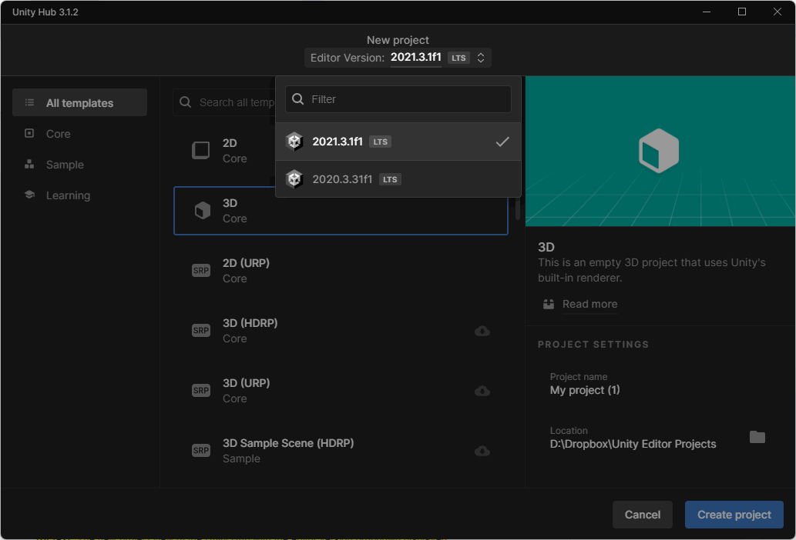

Unity Game Engine is one of the many powerful tools for developing games without having to code everything from scratch. It is among the most powerful and popular game engines out there, being a competitor to Unreal Engine and Godot.
Firstly go to Unity download page then download and go through the setup. After setting everything up, open Unity Hub and create a new project. From many premade templates select one fitting your project and give the project a name (e.g. MyProject). From there Unity Editor will open
Window for quick browsing through files of your project.
With this comes ability to drag and drop things to scene view and quickly open them in another program
or edit their properties in the Inspector window
Window for browsing, selecting, and hierarchical structuring game objects and elements, upon selecting an element in hierarchy window, we are able to edit its properties in Inspector window and scene view
This Window 3D or 2D renderer (depending on your needs) for your game objects and Gizmos.
We are able to select game objects directly through scene view.
Upon selecting a game object
3 arrows representing X, Y, Z cordinates appear that we are able to click and drag to change its position.
Window that enables us to quickly edit the properties of selected game object
Window that shows us errors, warnings or debug logs of our projects.
In a C#
script we are able to print out text onto the console window using the method Debug.Log("Hello World");
Custom Logic behind game object and elements have to be programmed in c#
Click Here for an example script in C# for Unity